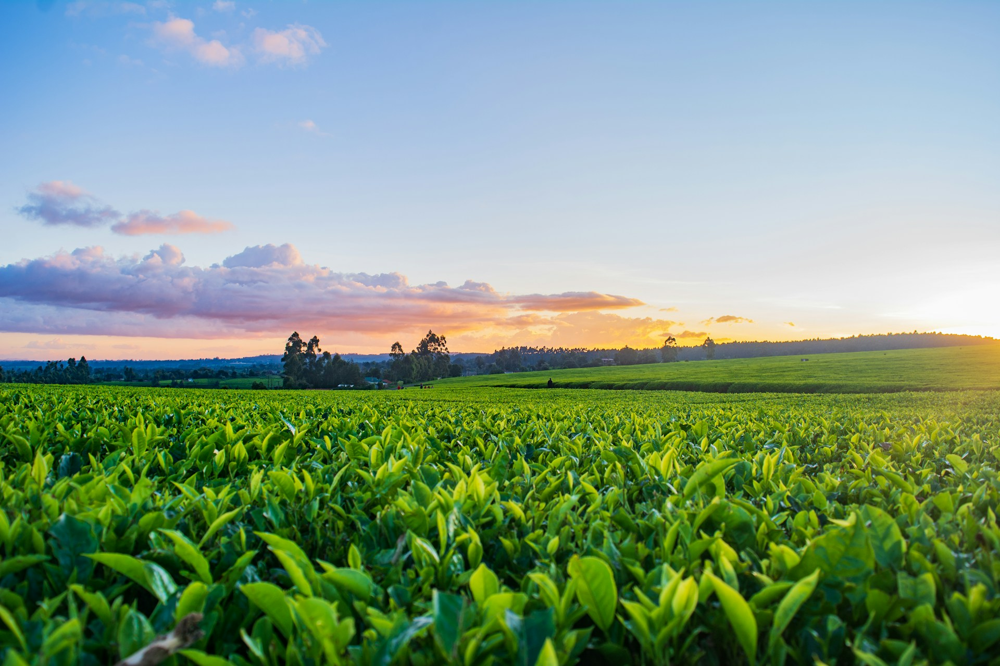

Sistem Peringatan Dini Ketahanan Pangan
Sistem Peringatan Dini untuk mendeteksi ancaman krisis iklim terhadap ketahanan pangan 270+ juta jiwa. Memantau sebelum krisis terjadi.

Apa Itu AGRIVA?
AGRIVA memanfaatkan teknologi Machine Learning (XGBoost) terdepan untuk memberikan analisis presisi tinggi terkait risiko iklim, membantu pengambil kebijakan mengambil langkah preventif dengan cepat.
Eksplorasi ForecastingPemantauan Real-time
Visualisasi risiko iklim interaktif di 33 provinsi secara langsung pada peta.
Forecasting Akurat
Peramalan kondisi iklim beberapa bulan ke depan menggunakan model time-series.
Simulasi AI
Ubah parameter cuaca/iklim secara manual untuk melihat dampak pada status ketahanan pangan.
Berdasarkan Data Historis
Memanfaatkan 28K+ data historis dengan performa recall model di atas 85%.
Alur Kerja Sistem (Data Pipeline)
Perjalanan data dari observasi iklim mentah hingga menjadi wawasan peringatan dini interaktif.
1. Pra-Pemrosesan Data
Agregasi data satelit & iklim historis ke format dekad (10 harian) serta penanganan nilai kosong untuk siap dimodelkan.
2. Clustering Wilayah
Algoritma K-Means membagi 33 provinsi menjadi kluster tipe iklim (Basah, Normal, Kering) agar akurasi pemodelan spesifik.
3. Pemodelan AI (XGBoost)
Model AI Classification mendeteksi sinyal EWS, sementara model Auto-Regressive Forecasting meramalkan iklim di masa mendatang.
4. Visualisasi Dasbor
Output model AI disajikan secara real-time pada dasbor web melalui peta interaktif, grafik, dan peringatan bahaya yang intuitif.
Tim Di Balik AGRIVA
Inovator yang berdedikasi membangun solusi teknologi untuk pertanian cerdas.
Developer 1
Machine Learning Engineer
Developer 2
Backend Developer
Developer 3
Frontend UI/UX
Peta Risiko Ketahanan Pangan
Pemantauan 33 Provinsi EWS
Provinsi Aman
-
Provinsi Risiko
-
Suhu Nasional
-
Proses Clustering & Karakteristik Wilayah
Sebelum klasifikasi, sistem membagi 33 Provinsi menjadi 3 Kluster Agroklimatologi menggunakan K-Means berdasarkan variabel Curah Hujan, Suhu, & Kelembaban Tanah. Hal ini meningkatkan akurasi deteksi karena tiap kluster dilatih menggunakan model berbeda.
Keterangan Status Peta
PETA SEBARAN NASIONAL
KONTROL PETA
Hasil yang ditunjukkan terdapat hasil dari model Forecasting.
Simulator Skenario Bahaya
Ubah parameter pertanian (suhu, curah hujan, vegetasi) secara interaktif untuk memprediksi ancaman ketahanan pangan.
PARAMETER INPUT
Kamus Indikator
- SPI 3 Bulan: Standardized Precipitation Index. Nilai negatif menunjukkan kekeringan.
- WSI: Water Satisfaction Index. Semakin tinggi persentase, semakin baik kebutuhan air tanaman terpenuhi.
- FPAR: Fraction of Photosynthetically Active Radiation. Mengukur aktivitas fotosintesis (kesehatan vegetasi).
- Radiasi Matahari: Energi matahari yang mencapai permukaan bumi, mempengaruhi evaporasi.
Siap Memulai Simulasi
Hasil simulasi probabilitas bahaya krisis pangan akan ditampilkan dalam grafik *gauge* di sini.
STATUS KERAWANAN PANGAN
0%
PELUANG BAHAYA
Indikator berada dalam zona stabil. Peluang bahaya () berada di bawah ambang batas (Threshold klasifikasi model). Kondisi pengairan dan cuaca diprediksi masih mendukung.
Tren Historis & Peramalan AI
Visualisasi historis dan peramalan XGBoost Auto-Regressive (Per-Dekad) untuk kondisi iklim di masa mendatang.
Proyeksi AI
EDA & Analisis Data Historis
Eksplorasi dataset EWS secara komprehensif (Sebaran, Korelasi, dan Klaster).
Rata-rata Curah Hujan
-
Suhu Rata-rata
-
Status Dominan
-
Suhu Max Ekstrem
-
Proporsi Status EWS (Target)
Distribusi Fitur (Histogram)
Tren Waktu: Curah Hujan vs WSI
Analisis 7 Indikator (Radar)
Hubungan Curah Hujan & Kelembaban Tanah
Grafik ini menunjukkan korelasi antara curah hujan dan kelembapan tanah, serta bagaimana titik-titik tersebut terklasifikasi sebagai 'Aman' atau 'Berisiko'. Wilayah berisiko umumnya terkumpul pada area dengan kelembapan ekstrem (terlalu rendah/tinggi).
Ringkasan Data Agregat
Nilai rata-rata dari seluruh indikator agroklimatologi berdasarkan kategori terpilih. Kolom Total Berisiko menunjukkan frekuensi (jumlah bulan/kejadian) wilayah tersebut diklasifikasikan masuk ke dalam status peringatan dini krisis pangan.
| Kategori | Curah Hujan | Suhu | SPI-3 | WSI | Soil Moist | Solar Rad | FPAR | FPAR Z-Score | Total Berisiko |
|---|
Dashboard Evaluasi Model Clustering
Hasil analisis dan evaluasi algoritma K-Means Clustering pada data iklim historis.
Nama Model
K-Means
Jumlah K Optimal
3
Silhouette Score
0.3916
DBI Score
1.105
Evaluasi K Optimal (Silhouette)
Profil Rata-rata Klaster
| Klaster | Curah Hujan | Suhu | Kelembapan Tanah |
|---|---|---|---|
| 0 | 71.58 mm | 25.95 °C | 0.335 |
| 1 | 56.48 mm | 25.38 °C | 0.274 |
| 2 | 72.27 mm | 23.22 °C | 0.333 |
Nilai merupakan rata-rata historis (centroid) dari masing-masing klaster.
Proporsi Provinsi
Sebaran Klaster: Curah Hujan vs Suhu
Daftar Anggota Provinsi
| Klaster | Anggota Provinsi |
|---|---|
| 0 (Tropis Basah) | Banten, Dki Jakarta, Jawa Barat, Jawa Tengah, Kalimantan Barat, Kalimantan S., Kalimantan T., Kalimantan Timur, Kepulauan-riau, Lampung, Maluku, Nangroe A.D., Papua Barat, Riau, Sulawesi Barat, Sulawesi Selatan, Sulawesi Tengg., Sumatera Selatan |
| 1 (Monsunal Kering) | Bali, Bangka Belitung, D.I. Yogyakarta, Gorontalo, Jawa Timur, Maluku Utara, Nusatenggara B., Nusatenggara T., Papua |
| 2 (Super Basah) | Bengkulu, Jambi, Sulawesi Tengah, Sulawesi Utara, Sumatera Barat, Sumatera Utara |
Dashboard Klasifikasi (XGBoost)
Evaluasi performa model klasifikasi peringatan dini krisis pangan.
Recall (Sensitivitas)
-
F1-Score Global
-
ROC AUC Score
-
Optimal Threshold
-
Grafik Confusion Matrix
Grafik Feature Importance
Proporsi Kelas (Aman vs Berisiko)
Kurva Precision-Recall
Tabel Komparasi Performa Antar-Klaster
| Klaster | Precision | Recall | F1-Score |
|---|